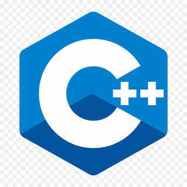

Meus Projetos
Meu Cronograma
Cronograma
| Cronograma | |||||||||||||||||||
| NEW | |||||||||||||||||||
| Horários | |||||||||||||||||||
| NEW | |||||||||||||||||||
| 05:00 AM | 06:00 AM | 07:00 AM | 08:00 AM | 09:00 AM | 10:00 AM | 11:00 AM | 12:00 AM | 13:00 PM | 14:00 PM | 15:00 PM | 16:00 PM | 17:00 PM | 18:00 PM | 19:00 PM | 20:00 PM | 21:00 PM | 22:00 PM | 23:00 PM | 00:00 PM |
| NEW | |||||||||||||||||||
| Atividades | |||||||||||||||||||
| NEW | |||||||||||||||||||
| Acordar | Iniciar | Despertar | Levantar | Arrumar a cama | Ir a academia | Voltar | Preparo almoço | Estudar | Praticar | Treinar | Meditar | Ir ao trabalho | Intervalo | Voltar | Tomar banho | Estudar | Praticar | Treinar | Exercitar |
| NEW | |||||||||||||||||||
| Status | |||||||||||||||||||
| NEW | |||||||||||||||||||
| Bom | Legal | Ótimo | Muito bom | Muito divertido | Excelente | Explendido | Excepcional | Espetacular | Very nice | Very good | Good work | Nice | Very joob | Good show | Excepted | Very much | Bem | Mais ou menos | Ruim |
| NEW | |||||||||||||||||||
| Seções | |||||||||||||||||||
| NEW | |||||||||||||||||||
| Introdução | Objetivos do Estudo | Justificativa | Metodologia | Revisão de Literatura | Definição de Conceitos | Hipóteses de Trabalho | Estrutura do Trabalho | Análise de Dados | Resultados | Discussão | Implicações Teóricas | Implicações Práticas | Limitações do Estudo | Conclusão | Sugestões para Pesquisas Futuras | Referências | Anexos | Glossário | Agradecimentos |
| NEW | |||||||||||||||||||
| Notas | |||||||||||||||||||
| NEW | |||||||||||||||||||
| 10 | 8 | 9 | 8 | 7 | 6 | 7 | 6 | 5 | 6 | 7 | 8 | 9 | 7 | 6 | 8 | 9 | 8 | 7 | 7 |
| NEW | |||||||||||||||||||
| FIM | |||||||||||||||||||
Estácio de Sá

Sobre
 Missão
Missão- Integramos academia e gestão para oferecer uma educação transformadora ao maior número de pessoas, criando impacto positivo para a sociedade.
 Visão
Visão- EDUCAR PARA TRANSFORMAR
 Valores
Valores- Foco no aluno
- O aluno é nossa razão de ser.
- Gente e Meritocracia
- Valorizamos e reconhecemos o mérito do maior ativo que possuímos: nossa gente.
- Inovação
- Devemos criar e ousar sempre.
- Simplicidade
- Devemos ser simples para sermos ágeis e austeros.
- Resultado
- Perseguimos resultados extraordinários com paixão e método, agindo sempre como “donos”.
- Ética
- Não toleramos desvios de conduta.
- Excelência
- Perseguimos a excelência na prestação de serviços dentro e fora da sala de aula.
- Hospitalidade
- Tratamos as pessoas como gostamos de ser tratados.
Cursos
Engenharia de Software
Engloba todo o desenvolvimento de Software sendo uma área mais complexa que envolve sistemas e diferentes tipos de ferramentas.
Uma área mais aprofundada que as demais
Desenvolvimento Full-stack 
Engloba todo o desenvolvimento Web desde o front-end indo até o back-end
Sendo uma área mais aprofundada que as demais
Materias
Engenharia de Software
| Arquitetura Computacional |
| Interação e relação entre o software e o hardware |
| Desenvolvimento de Software |
| Projeção e manutenção de softwares |
| Python |
| Linguagem multiparadgma sendo orientada e estruturada á objetos |
| Segurança da Informação |
| Proteção de dados contra ataques cibernéticos e malwares |
| Pensamento Computacional |
| Forma de analisar e raciocinar do desenvolvedor |
| Matemática e lógica |
| Fortalecimento do raciocinio lógico do desenvolvedor |
| Sistemas e Sociedade |
| De que forma a sociedade influência na construção de softwares |
| Desenvolvimento WEB |
| Utilizando as ferramentas html,css e javascript |
| Gerenciamento de Projetos |
| Manusear a equipe de software na criação de projetos |
| Redes |
| Como funciona o sistema de redes dentro de uma organização |
| Métodos quantitativos |
| referem-se a abordagens de pesquisa que se baseiam em dados numéricos e análise estatística para entender fenômenos, testar hipóteses e identificar padrões. |
| Engenharia de Usabilidade |
| refere-se à prática de projetar sistemas, interfaces ou produtos com foco na experiência do usuário (UX), visando torná-los mais eficientes, intuitivos e agradáveis de usar. |
| FIM |
Engenharia de Software
| Direito Cibernético |
| é uma área do direito que lida com questões jurídicas relacionadas ao uso da internet, das tecnologias digitais e da computação |
| Computação em Nuvem |
| A Computação em Nuvem refere-se à entrega de recursos computacionais (como servidores, armazenamento de dados, softwares e redes) pela internet, |
| Estrutura de Dados |
| Uma Estrutura de Dados é uma forma de organizar e armazenar dados de maneira eficiente, para que possam ser acessados e manipulados de maneira otimizada. |
| Modelagem de Sistemas em UML |
| A Modelagem de Sistemas em UML (Unified Modeling Language) é uma técnica gráfica utilizada para representar visualmente os componentes e o comportamento de sistemas de software. |
| Bancos de Dados NoSQL |
| Os Bancos de Dados NoSQL são sistemas de gerenciamento de banco de dados projetados para lidar com grandes volumes de dados não estruturados ou semi-estruturados, oferecendo maior flexibilidade |
| Gerência de Configuração |
| A Gerência de Configuração é o processo de controlar e monitorar as modificações no software, hardware e outros componentes de um sistema |
| Arquitetura de Sistemas |
| A Arquitetura de Sistemas envolve o design e a estruturação dos componentes e interações de um sistema de software, garantindo que ele atenda aos requisitos funcionais e não funcionais, como escalabilidade, desempenho e segurança |
| Qualidade e Teste de Software |
| refere-se ao grau em que um sistema ou aplicação atende aos requisitos especificados, oferece desempenho adequado |
| Teste de Usabilidade |
| O teste de usabilidade foca na experiência do usuário ao interagir com o sistema ou software. O objetivo é avaliar se o software é intuitivo |
| Teste de Compatibilidade |
| O teste de compatibilidade visa garantir que o software funcione corretamente em diferentes ambientes, dispositivos, sistemas operacionais |
| Teste de Segurança |
| O teste de segurança tem como objetivo identificar vulnerabilidades no software que possam ser exploradas por atacantes. |
| Teste de Localização (ou "L10n") |
| O teste de localização refere-se ao processo de verificar se o software foi adequadamente adaptado para diferentes regiões e idiomas. |
| FIM |
Materias Extras
Engenharia de Software
| Automação de Testes: |
| Estudo de ferramentas e técnicas para automatizar a execução de testes, melhorando a eficiência e a cobertura de testes. |
| Gerenciamento de Defeitos |
| Processo de rastrear, classificar e priorizar defeitos encontrados durante os testes e garantir que sejam corrigidos antes do lançamento do software. |
| Testes Ágeis |
| Integração de práticas de teste em metodologias ágeis (como Scrum ou Kanban), focando em entregas contínuas e colaboração estreita entre equipes de desenvolvimento e QA. |
| Testes de Performance |
| Avaliação do comportamento do software sob diferentes cargas de usuários e condições de uso, identificando gargalos de desempenho e problemas de escalabilidade. |
| Testes de Stress e Carga: |
| Avaliação da estabilidade do software em condições extremas (teste de stress) ou sob alta carga de usuários (teste de carga), para garantir sua robustez em situações de pico. |
| Teste de Integração Contínua (CI) |
| Processo de testar automaticamente o código toda vez que novas alterações são incorporadas ao repositório, com foco na detecção precoce de defeitos. |
| Testes em Nuvem |
| Aplicação de testes em ambientes de computação em nuvem para garantir que o sistema seja escalável, seguro e confiável em plataformas como AWS, Azure ou Google Cloud. |
| Testes de Compatibilidade de Navegadores: |
| Avaliação de como o software se comporta em diferentes navegadores da web (Chrome, Firefox, Safari, Edge, etc.) para garantir funcionalidade consistente. |
| Testes de Aplicativos Móveis |
| Testes específicos para aplicativos móveis, considerando diferentes dispositivos, versões de sistemas operacionais (iOS, Android), e condições de rede. |
| FIM |
Engenharia de Software
| Testes de Interface de Usuário (UI) |
| Avaliação da interface do usuário para garantir que seja intuitiva, fácil de usar e que os elementos da interface funcionem corretamente. |
| Testes de Acessibilidade: |
| Garantir que o software seja acessível para pessoas com deficiências, seguindo as diretrizes de acessibilidade como WCAG (Web Content Accessibility Guidelines). |
| Testes de Funcionalidade: |
| Verificação das funcionalidades do software para garantir que ele atenda aos requisitos especificados e que todas as funções essenciais operem conforme esperado. |
| Gestão da Qualidade do Software (SQM) |
| Estratégias e práticas para garantir que os processos de desenvolvimento de software e os testes atendam aos padrões de qualidade definidos pela organização. |
| Análise de Riscos de Software: |
| Avaliação e mitigação de riscos técnicos e operacionais associados ao desenvolvimento e uso do software, incluindo riscos de segurança, falhas de desempenho e problemas de usabilidade. |
| Testes de Recuperação de Desastres |
| Teste de cenários de falhas críticas para verificar se o sistema pode se recuperar de maneira eficiente em situações de desastre ou falha grave. |
| Testes de Dados de Entrada (Boundary Testing) |
| Testes para garantir que o software possa lidar adequadamente com valores de entrada válidos e inválidos, incluindo valores nos limites aceitáveis |
| Testes de Localização (i18n): |
| Avaliação de sistemas para garantir que eles possam ser adaptados facilmente para diferentes idiomas, regiões e formatos culturais. |
| Testes de Backup e Recuperação |
| Verificação dos processos de backup e recuperação de dados para garantir que o sistema possa ser restaurado corretamente após falhas ou perda de dados. |
| FIM |
Linguagens de programação
Linguagens
 Python
Python- é uma linguagem de programação de alto nível, interpretada e de uso geral, conhecida por sua sintaxe simples e legibilidade.
 Java
Java- é uma linguagem de programação orientada a objetos, de alto nível e multiplataforma, o que significa que programas escritos em Java
 Javascript
Javascript- é uma linguagem de programação de script usada principalmente para desenvolvimento web, permitindo a criação de páginas interativas e dinâmicas.
 Ruby
Ruby- é uma linguagem de programação de alto nível, dinâmica e orientada a objetos, conhecida pela sua sintaxe concisa e expressiva.
 C
C- é uma das linguagens de programação mais antigas e influentes, desenvolvida nos anos 1970. É uma linguagem de baixo nível em comparação com muitas outras, permitindo o controle direto sobre o hardware e a memória.
- C++
- é uma extensão do C, incorporando conceitos de programação orientada a objetos, como classes e herança.
 C#
C#- é uma linguagem de programação desenvolvida pela Microsoft como parte da plataforma .NET.
- Cobol
- (Common Business-Oriented Language) é uma das linguagens de programação mais antigas, criada para processamento de dados empresariais e financeiros.
 Php
Php- é uma linguagem de programação de uso geral, especialmente voltada para o desenvolvimento web. Originalmente criada para páginas web dinâmicas, ela continua sendo uma das linguagens mais populares para desenvolvimento de websites e sistemas web.
Meus Certificados
Certificados
| Certificados | |||||
| NEW | |||||
| SKILLS | |||||
| NEW | |||||
| Java | Html | Html e css | Historico | LGPD | Segurança da Informação |
| NEW | |||||
 |
|
|
|
|
|
| NEW | |||||
| Baixe aqui | Baixe aqui | Baixe aqui | Baixe aqui | Baixe aqui | Baixe aqui |
| NEW | |||||
| FIM | |||||